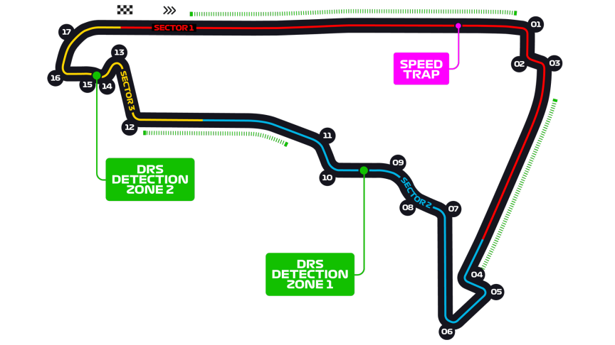

Grand Prix du Mexique
Informations
Nom du circuit
Autódromo Hermanos Rodríguez
Lieu
Mexico (Mexique)
Nombre de tours
71
Longueur du circuit
4.304 km
Distance de course
305.354 km
Dernier vainqueur
Max Verstappen
Classement nombres de victoires sur ce circuit
2 victoires - Max Verstappen
2 victoires - Jim Clark
2 victoires - Nigel Mansell
2 victoires - Alain Prost
2 victoires - Lewis Hamilton
Le saviez-vous ?
C'est sur ce circuit qu'en 2018, le pilote britannique Lewis Hamilton obtenu son 5ème titre mondial, égalant par la même occasion Juan Manuel Fangio. Malgré une 4ème place, il a bien trop d'avance au championnat sur son concurrent au titre Sebastian Vettel pour pouvoir être rattrapé.
Véritable terre de sacre, l'édition 1964 fut particulière. En effet, cette année là trois pilotes peuvent encore être sacré champion du monde : Graham Hill, Jim Clark et John Surtees. Alors que le premier se fit percuté pendant la course, le second est lâché par une fuite d'huile sur son moteur. John Surtees devint champion du monde, et le premier pilote à avoir aussi gagné un championnat du monde, mais à moto cette fois-ci quelques années auparavant.
Le Grand Prix a toujours eu lieu sur le même circuit, l'Autódromo Hermanos Rodríguez. Il a souvent été au calendrier de la Formule 1, sauf pendant les années 1971 à 1985, 1993 à 2014 et enfin en 2020 à la suite de la pandémie mondiale.